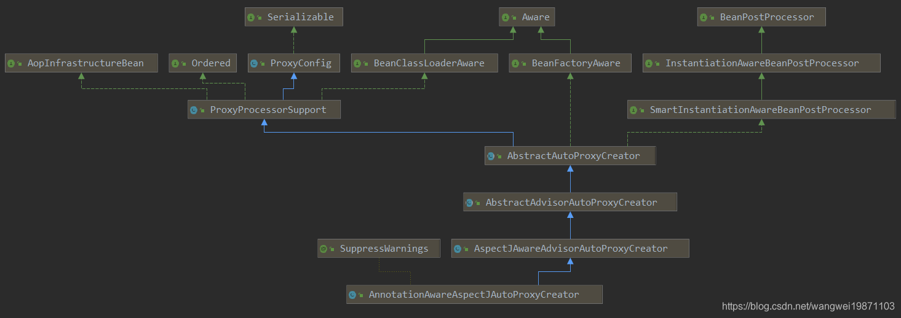

MyLogAspects定义一个切面：里面定义了一个切点，某个包以及子包下的所有类的所有方法，添加一个Before注解方法，打个log而已。其实就是下面定义的MyService类的show方法做增强。
x1public class MyLogAspects {4
5 /**6 * 修饰符 返回类型(一定要有) 包名.类名.方法名(一定要有) 参数7 */8 ("execution(* com.ww.component.*.*(..))")9 public void pointCut() {10 }11
12 /**13 * 在目标方法执行后14 */15 ("pointCut()")16 public void logBefore() {17 System.out.println("logBefore");18 }19 20}MyConfig配置类：加EnableAspectJAutoProxy注解，开启AOP。
141public class MyConfig {4
5 6 public IService getService() {7 return new MyService();8 }9
10 11 public MyLogAspects getMyLogAspects() {12 return new MyLogAspects();13 }14}MyService定义一个接口和实现类：我们要对show方法做增强。
121public class MyService implements IService {3
4 5 public void show() {6 System.out.println("MyService show");7 }8}9
10public interface IService {11 void show();12}测试代码：
81public void AopTest() {3 AnnotationConfigApplicationContext applicationContext = new AnnotationConfigApplicationContext();4 applicationContext.register(MyConfig.class);5 applicationContext.refresh();6 IService bean = applicationContext.getBean(IService.class);7 bean.show();8}结果
21logBefore2MyService show 这个注解是开启AOP代理的关键，他内部的属性其实并不是开启的关键，proxyTargetClass只是能决定要不要用CGLIB而已。真正决定能进行代理的是AspectJAutoProxyRegistrar.class。
211(ElementType.TYPE)2(RetentionPolicy.RUNTIME)3(AspectJAutoProxyRegistrar.class)5public @interface EnableAspectJAutoProxy {6
7 /**8 * Indicate whether subclass-based (CGLIB) proxies are to be created as opposed9 * to standard Java interface-based proxies. The default is {@code false}.10 */11 boolean proxyTargetClass() default false;12
13 /**14 * Indicate that the proxy should be exposed by the AOP framework as a {@code ThreadLocal}15 * for retrieval via the {@link org.springframework.aop.framework.AopContext} class.16 * Off by default, i.e. no guarantees that {@code AopContext} access will work.17 * @since 4.3.118 */19 boolean exposeProxy() default false;20
21} 代理注册器，他就是个ImportBeanDefinitionRegistrar扩展，可以注册一个bean定义。
281class AspectJAutoProxyRegistrar implements ImportBeanDefinitionRegistrar {2
3 /**4 * Register, escalate, and configure the AspectJ auto proxy creator based on the value5 * of the @{@link EnableAspectJAutoProxy#proxyTargetClass()} attribute on the importing6 * {@code @Configuration} class.7 */8 9 public void registerBeanDefinitions(10 AnnotationMetadata importingClassMetadata, BeanDefinitionRegistry registry) {11
12 // ---看2-4步---13 AopConfigUtils.registerAspectJAnnotationAutoProxyCreatorIfNecessary(registry);14 // ---end---15
16 AnnotationAttributes enableAspectJAutoProxy =17 AnnotationConfigUtils.attributesFor(importingClassMetadata, EnableAspectJAutoProxy.class);18 if (enableAspectJAutoProxy != null) {19 if (enableAspectJAutoProxy.getBoolean("proxyTargetClass")) {20 AopConfigUtils.forceAutoProxyCreatorToUseClassProxying(registry);21 }22 if (enableAspectJAutoProxy.getBoolean("exposeProxy")) {23 AopConfigUtils.forceAutoProxyCreatorToExposeProxy(registry);24 }25 }26 }27
28}配置类
51public class MyConfig {4
5}解析配置类：ConfigurationClassPostProcessor的processConfigBeanDefinitions方法。
ConfigurationClassParser的doProcessConfigurationClass中:
首先getImports会将注释以及父注释中的Import注解的值全部加载进来：
把AspectJAutoProxyRegistrar给找出来了。
在processImports中进行ImportBeanDefinitionRegistrar类型处理。
然后进行了实例化，然后放入了ConfigurationClass的importBeanDefinitionRegistrars中，准备后面加载bean定义的时候用。
ConfigurationClassBeanDefinitionReader的loadBeanDefinitionsForConfigurationClass最后一行：
就是调用ImportBeanDefinitionRegistrar的registerBeanDefinitions方法：
其实就是创建了AnnotationAwareAspectJAutoProxyCreator的bean定义，然后设置了属性。
361public static BeanDefinition registerAspectJAnnotationAutoProxyCreatorIfNecessary(BeanDefinitionRegistry registry) {3 return registerAspectJAnnotationAutoProxyCreatorIfNecessary(registry, (Object)null);4}5
6// 注册 AnnotationAwareAspectJAutoProxyCreator7public static BeanDefinition registerAspectJAnnotationAutoProxyCreatorIfNecessary(BeanDefinitionRegistry registry, Object source) {9 return registerOrEscalateApcAsRequired(AnnotationAwareAspectJAutoProxyCreator.class, registry, source);10}11
12// 执行注册 AnnotationAwareAspectJAutoProxyCreator13// cls就是 AnnotationAwareAspectJAutoProxyCreator14private static BeanDefinition registerOrEscalateApcAsRequired(Class<?> cls, BeanDefinitionRegistry registry, Object source) {16 Assert.notNull(registry, "BeanDefinitionRegistry must not be null");17 if (registry.containsBeanDefinition("org.springframework.aop.config.internalAutoProxyCreator")) {18 BeanDefinition apcDefinition = registry.getBeanDefinition("org.springframework.aop.config.internalAutoProxyCreator");19 if (!cls.getName().equals(apcDefinition.getBeanClassName())) {20 int currentPriority = findPriorityForClass(apcDefinition.getBeanClassName());21 int requiredPriority = findPriorityForClass(cls);22 if (currentPriority < requiredPriority) {23 apcDefinition.setBeanClassName(cls.getName());24 }25 }26
27 return null;28 } else {29 RootBeanDefinition beanDefinition = new RootBeanDefinition(cls);30 beanDefinition.setSource(source);31 beanDefinition.getPropertyValues().add("order", -2147483648);32 beanDefinition.setRole(2);33 registry.registerBeanDefinition("org.springframework.aop.config.internalAutoProxyCreator", beanDefinition);34 return beanDefinition;35 }36}AnnotationAwareAspectJAutoProxyCreator继承图：

实例化之前的处理器处理，也就是applyBeanPostProcessorsBeforeInstantiation方法，因为AnnotationAwareAspectJAutoProxyCreator也实现了这个方法，这个方法就可以把切面类给解析出来：
391// AbstractAutoProxyCreator2public Object postProcessBeforeInstantiation(Class<?> beanClass, String beanName) {4 Object cacheKey = getCacheKey(beanClass, beanName);5
6 if (!StringUtils.hasLength(beanName) || !this.targetSourcedBeans.contains(beanName)) {7 //查缓存，是否有处理过了，不管是不是需要通知增强的，只要处理过了就会放里面8 if (this.advisedBeans.containsKey(cacheKey)) {9 return null;10 }11 12 // ---看3-2步--- // ---看3-3步---13 if (isInfrastructureClass(beanClass) || shouldSkip(beanClass, beanName)) {14 // ---end--- // ---end---15 //要跳过的直接设置FALSE16 this.advisedBeans.put(cacheKey, Boolean.FALSE);17 return null;18 }19 }20
21 TargetSource targetSource = getCustomTargetSource(beanClass, beanName);22 if (targetSource != null) {23 if (StringUtils.hasLength(beanName)) {24 this.targetSourcedBeans.add(beanName);25 }26 Object[] specificInterceptors = getAdvicesAndAdvisorsForBean(beanClass, beanName, targetSource);27 28 // ---看第4步---29 // 创建代理30 Object proxy = createProxy(beanClass, beanName, specificInterceptors, targetSource);31 // ---end---32 33 // 放到缓存34 this.proxyTypes.put(cacheKey, proxy.getClass());35 return proxy;36 }37
38 return null;39}是否是内部基础类。
91protected boolean isInfrastructureClass(Class<?> beanClass) {3 // ---看3-2.1步---4 return (super.isInfrastructureClass(beanClass) ||5 // ---end---6 // ---看3-2.2步---7 (this.aspectJAdvisorFactory != null && this.aspectJAdvisorFactory.isAspect(beanClass)));8 // ---end---9} 主要调用的是AbstractAutoProxyCreator的方法，主要看bean的类型是不是内部的类型，比如Advice，Pointcut，Advisor，AopInfrastructureBean这些是跟AOP相关的，所以不应该被处理。
101protected boolean isInfrastructureClass(Class<?> beanClass) {2 boolean retVal = Advice.class.isAssignableFrom(beanClass) ||3 Pointcut.class.isAssignableFrom(beanClass) ||4 Advisor.class.isAssignableFrom(beanClass) ||5 AopInfrastructureBean.class.isAssignableFrom(beanClass);6 if (retVal && logger.isTraceEnabled()) {7 logger.trace("Did not attempt to auto-proxy infrastructure class [" + beanClass.getName() + "]");8 }9 return retVal;10} 主要是看是否有Aspect注解，还有就是没有ajc$开头的属性名。
41public boolean isAspect(Class<?> clazz) {3 return (hasAspectAnnotation(clazz) && !compiledByAjc(clazz));4} 这个方法是找出Aspect切面和解析通知器的方法，通知器Advisor里面有通知Advice实例。
141protected boolean shouldSkip(Class<?> beanClass, String beanName) {3 4 // ---看3-3.1步---5 List<Advisor> candidateAdvisors = findCandidateAdvisors();6 // ---end---7 for (Advisor advisor : candidateAdvisors) {8 if (advisor instanceof AspectJPointcutAdvisor &&9 ((AspectJPointcutAdvisor) advisor).getAspectName().equals(beanName)) {10 return true;11 }12 }13 return super.shouldSkip(beanClass, beanName);14}171protected List<Advisor> findCandidateAdvisors() {3 // ---看3-3.2步---4 // 调用父类的方法5 // Add all the Spring advisors found according to superclass rules.6 List<Advisor> advisors = super.findCandidateAdvisors();7 // ---end---8 9 // Build Advisors for all AspectJ aspects in the bean factory.10 if (this.aspectJAdvisorsBuilder != null) {11 12 // ---看3-3.4步---13 advisors.addAll(this.aspectJAdvisorsBuilder.buildAspectJAdvisors());14 // ---end---15 }16 return advisors;17} 首先会调用BeanFactoryAdvisorRetrievalHelper来寻找是否有Advisor的bean定义。
71protected List<Advisor> findCandidateAdvisors() {2 Assert.state(this.advisorRetrievalHelper != null, "No BeanFactoryAdvisorRetrievalHelper available");3 4 // ---看3-3.3步---5 return this.advisorRetrievalHelper.findAdvisorBeans();6 // ---end---7} 执行的是BeanFactoryAdvisorRetrievalHelper的findAdvisorBeans方法，其实就是寻找所有Advisor.class的bean名字，如果存在就放入缓存，并进行创建，然后返回。
361public List<Advisor> findAdvisorBeans() {2 // Determine list of advisor bean names, if not cached already.3 String[] advisorNames = this.cachedAdvisorBeanNames;4 5 if (advisorNames == null) {6 // Do not initialize FactoryBeans here: We need to leave all regular beans7 // uninitialized to let the auto-proxy creator apply to them!8 advisorNames = BeanFactoryUtils.beanNamesForTypeIncludingAncestors(9 this.beanFactory, Advisor.class, true, false);10 this.cachedAdvisorBeanNames = advisorNames;11 }12 if (advisorNames.length == 0) {13 return new ArrayList<>();14 }15
16 List<Advisor> advisors = new ArrayList<>();17 for (String name : advisorNames) {18 if (isEligibleBean(name)) {19 if (this.beanFactory.isCurrentlyInCreation(name)) {20 if (logger.isTraceEnabled()) {21 logger.trace("Skipping currently created advisor '" + name + "'");22 }23 }24 else {25 try {26 advisors.add(this.beanFactory.getBean(name, Advisor.class));27 }28 catch (BeanCreationException ex) {29 ...30 throw ex;31 }32 }33 }34 }35 return advisors;36 } BeanFactoryAspectJAdvisorsBuilderd的buildAspectJAdvisors，其实他做的就是寻找Aspect注解的切面对象，然后解析他的方法，通过注解来生成对应的通知器Advisor。
941public List<Advisor> buildAspectJAdvisors() {2 //获取切面名字列表3 List<String> aspectNames = this.aspectBeanNames;4 5 //只找一次6 if (aspectNames == null) {7 8 //双重检查9 synchronized (this) {10 aspectNames = this.aspectBeanNames;11 if (aspectNames == null) {12 //通知集合13 List<Advisor> advisors = new ArrayList<>();14 //切面名字列表15 aspectNames = new ArrayList<>();16 17 //寻找所有object类型的bean定义名字18 String[] beanNames = BeanFactoryUtils.beanNamesForTypeIncludingAncestors(19 this.beanFactory, Object.class, true, false);20 21 //遍历获取有Aspect注解的加入到aspectNames列表22 for (String beanName : beanNames) {23 if (!isEligibleBean(beanName)) {24 continue;25 }26
27 //获取类型，如果不存在，可能已经被代理过了28 Class<?> beanType = this.beanFactory.getType(beanName);29 if (beanType == null) {30 continue;31 }32 33 //是否有Aspect注解的34 if (this.advisorFactory.isAspect(beanType)) {35 aspectNames.add(beanName);36 37 //创建切面元数据38 AspectMetadata amd = new AspectMetadata(beanType, beanName);39 40 //单例41 if (amd.getAjType().getPerClause().getKind() == PerClauseKind.SINGLETON) {42 43 //创建实例工厂44 MetadataAwareAspectInstanceFactory factory =45 new BeanFactoryAspectInstanceFactory(this.beanFactory, beanName);46 47 // ---看3-3.5步---48 List<Advisor> classAdvisors = this.advisorFactory.getAdvisors(factory);49 // ---end---50 51 if (this.beanFactory.isSingleton(beanName)) {52 this.advisorsCache.put(beanName, classAdvisors);53 }54 else {55 this.aspectFactoryCache.put(beanName, factory);56 }57 advisors.addAll(classAdvisors);58 }59 else {60 // Per target or per this.61 if (this.beanFactory.isSingleton(beanName)) {62 throw new IllegalArgumentException("Bean with name '" + beanName +63 "' is a singleton, but aspect instantiation model is not singleton");64 }65 MetadataAwareAspectInstanceFactory factory =66 new PrototypeAspectInstanceFactory(this.beanFactory, beanName);67 this.aspectFactoryCache.put(beanName, factory);68 advisors.addAll(this.advisorFactory.getAdvisors(factory));69 }70 }71 }72 this.aspectBeanNames = aspectNames;73 return advisors;74 }75 }76 }77
78 if (aspectNames.isEmpty()) {79 return Collections.emptyList();80 }81 List<Advisor> advisors = new ArrayList<>();82 83 for (String aspectName : aspectNames) {84 List<Advisor> cachedAdvisors = this.advisorsCache.get(aspectName);85 if (cachedAdvisors != null) {86 advisors.addAll(cachedAdvisors);87 }88 else {89 MetadataAwareAspectInstanceFactory factory = this.aspectFactoryCache.get(aspectName);90 advisors.addAll(this.advisorFactory.getAdvisors(factory));91 }92 }93 return advisors;94} ReflectiveAspectJAdvisorFactory的getAdvisors，首先获取切面类型，然后获取除Pointcut注解的所有方法，根据方法注解来创建Advisor通知器。
441public List<Advisor> getAdvisors(MetadataAwareAspectInstanceFactory aspectInstanceFactory) {3 //获取切面4 Class<?> aspectClass = aspectInstanceFactory.getAspectMetadata().getAspectClass();5 String aspectName = aspectInstanceFactory.getAspectMetadata().getAspectName();6 //验证7 validate(aspectClass);8
9 // We need to wrap the MetadataAwareAspectInstanceFactory with a decorator10 // so that it will only instantiate once.11 MetadataAwareAspectInstanceFactory lazySingletonAspectInstanceFactory =12 new LazySingletonAspectInstanceFactoryDecorator(aspectInstanceFactory);13
14 List<Advisor> advisors = new ArrayList<>();15 //获取通知器方法 // ---看3-3.6步---16 for (Method method : getAdvisorMethods(aspectClass)) {17 // ---end---18 19 // ---看3-3.7步---20 //创建Advisor21 Advisor advisor = getAdvisor(method, lazySingletonAspectInstanceFactory, advisors.size(), aspectName);22 // ---end---23 24 if (advisor != null) {25 advisors.add(advisor);26 }27 }28
29 // If it's a per target aspect, emit the dummy instantiating aspect.30 if (!advisors.isEmpty() && lazySingletonAspectInstanceFactory.getAspectMetadata().isLazilyInstantiated()) {31 Advisor instantiationAdvisor = new SyntheticInstantiationAdvisor(lazySingletonAspectInstanceFactory);32 advisors.add(0, instantiationAdvisor);33 }34
35 // Find introduction fields.introduction处理36 for (Field field : aspectClass.getDeclaredFields()) {37 Advisor advisor = getDeclareParentsAdvisor(field);38 if (advisor != null) {39 advisors.add(advisor);40 }41 }42
43 return advisors;44} 获取Pointcut注解的方法，这里会后的所有不包含Pointcut注解的方法，让然后进行排序，根据这个注解顺序Around.class, Before.class, After.class, AfterReturning.class, AfterThrowing.class，然后才是普通方法。
111private List<Method> getAdvisorMethods(Class<?> aspectClass) {2 final List<Method> methods = new ArrayList<>();3 ReflectionUtils.doWithMethods(aspectClass, method -> {4 // Exclude pointcuts5 if (AnnotationUtils.getAnnotation(method, Pointcut.class) == null) {6 methods.add(method);7 }8 }, ReflectionUtils.USER_DECLARED_METHODS);9 methods.sort(METHOD_COMPARATOR);10 return methods;11} 现在已经获取到了切面对象里的方法，现在就是解析这些方法的注解来进行创建Advisor通知器，内部会创建Advice通知，怎么连切点都没分析就创建通知器了？其实切点就在这里面解析啦。
221public Advisor getAdvisor(Method candidateAdviceMethod, MetadataAwareAspectInstanceFactory aspectInstanceFactory,4 int declarationOrderInAspect, String aspectName) {5
6 validate(aspectInstanceFactory.getAspectMetadata().getAspectClass());7 8 // ---看3-3.7.1步---9 //获取切点表达式10 AspectJExpressionPointcut expressionPointcut = getPointcut(11 candidateAdviceMethod, aspectInstanceFactory.getAspectMetadata().getAspectClass());12 // ---end---13 14 if (expressionPointcut == null) {15 return null;16 }17
18 // ---看3-3.7.3步---19 return new InstantiationModelAwarePointcutAdvisorImpl(expressionPointcut, candidateAdviceMethod,20 this, aspectInstanceFactory, declarationOrderInAspect, aspectName);21 // ---end---22} 首先当然去获取切点啦，先找下方法注解里面有没有AspectJ相关的注解Pointcut.class, Around.class, Before.class, After.class, AfterReturning.class, AfterThrowing.class，没有当然就不用处理啦。有的话就要创建切点表达式，然后返回。
201private AspectJExpressionPointcut getPointcut(Method candidateAdviceMethod, Class<?> candidateAspectClass) {3 //找AspectJAnnotation注解4 AspectJAnnotation<?> aspectJAnnotation =5 // ---看3-3.7.2步---6 AbstractAspectJAdvisorFactory.findAspectJAnnotationOnMethod(candidateAdviceMethod);7 // ---end---8 if (aspectJAnnotation == null) {9 return null;10 }11
12 AspectJExpressionPointcut ajexp =13 new AspectJExpressionPointcut(candidateAspectClass, new String[0], new Class<?>[0]);14 //设置表达式15 ajexp.setExpression(aspectJAnnotation.getPointcutExpression());16 if (this.beanFactory != null) {17 ajexp.setBeanFactory(this.beanFactory);18 }19 return ajexp;20} 遍历所有的AspectJ注解类型，寻找是否有该类的注解，有的话就封装成AspectJAnnotation返回。
171private static final Class<?>[] ASPECTJ_ANNOTATION_CLASSES = new Class<?>[] {2 Pointcut.class, Around.class, Before.class, After.class, AfterReturning.class, AfterThrowing.class};3
4
5
6 7 protected static AspectJAnnotation<?> findAspectJAnnotationOnMethod(Method method) {8 //遍历所有注解，找到就返回9 for (Class<?> clazz : ASPECTJ_ANNOTATION_CLASSES) {10 11 AspectJAnnotation<?> foundAnnotation = findAnnotation(method, (Class<Annotation>) clazz);12 if (foundAnnotation != null) {13 return foundAnnotation;14 }15 }16 return null;17 } 构造函数中最后的地方会实例化Advice。
371public InstantiationModelAwarePointcutAdvisorImpl(AspectJExpressionPointcut declaredPointcut,2 Method aspectJAdviceMethod, AspectJAdvisorFactory aspectJAdvisorFactory,3 MetadataAwareAspectInstanceFactory aspectInstanceFactory, int declarationOrder, String aspectName) {4
5 this.declaredPointcut = declaredPointcut;6 this.declaringClass = aspectJAdviceMethod.getDeclaringClass();7 this.methodName = aspectJAdviceMethod.getName();8 this.parameterTypes = aspectJAdviceMethod.getParameterTypes();9 this.aspectJAdviceMethod = aspectJAdviceMethod;10 this.aspectJAdvisorFactory = aspectJAdvisorFactory;11 this.aspectInstanceFactory = aspectInstanceFactory;12 this.declarationOrder = declarationOrder;13 this.aspectName = aspectName;14
15 if (aspectInstanceFactory.getAspectMetadata().isLazilyInstantiated()) {16 // Static part of the pointcut is a lazy type.17 Pointcut preInstantiationPointcut = Pointcuts.union(18 aspectInstanceFactory.getAspectMetadata().getPerClausePointcut(), this.declaredPointcut);19
20 // Make it dynamic: must mutate from pre-instantiation to post-instantiation state.21 // If it's not a dynamic pointcut, it may be optimized out22 // by the Spring AOP infrastructure after the first evaluation.23 this.pointcut = new PerTargetInstantiationModelPointcut(24 this.declaredPointcut, preInstantiationPointcut, aspectInstanceFactory);25 this.lazy = true;26 }27 else {28 // A singleton aspect.29 this.pointcut = this.declaredPointcut;30 this.lazy = false;31 32 // ---看3-3.7.4步---33 // 实例化 advice34 this.instantiatedAdvice = instantiateAdvice(this.declaredPointcut);35 // ---end---36 }37} 真的创建Advice通知。
81private Advice instantiateAdvice(AspectJExpressionPointcut pointcut) {2 // ---看3.7.5步---3 // 从工厂中创建4 Advice advice = this.aspectJAdvisorFactory.getAdvice(this.aspectJAdviceMethod, pointcut,5 this.aspectInstanceFactory, this.declarationOrder, this.aspectName);6 // ---end---7 return (advice != null ? advice : EMPTY_ADVICE);8} 从工厂创建advice，首先进行了一些验证，然后获得AspectJ的注解，根据注解类型进行创建，最后设置一些参数：
781public Advice getAdvice(Method candidateAdviceMethod, AspectJExpressionPointcut expressionPointcut,4 MetadataAwareAspectInstanceFactory aspectInstanceFactory, int declarationOrder, String aspectName) {5
6 Class<?> candidateAspectClass = aspectInstanceFactory.getAspectMetadata().getAspectClass();7 validate(candidateAspectClass);8
9 AspectJAnnotation<?> aspectJAnnotation =10 AbstractAspectJAdvisorFactory.findAspectJAnnotationOnMethod(candidateAdviceMethod);11 if (aspectJAnnotation == null) {12 return null;13 }14
15 if (!isAspect(candidateAspectClass)) {16 throw new AopConfigException("Advice must be declared inside an aspect type: " +17 "Offending method '" + candidateAdviceMethod + "' in class [" +18 candidateAspectClass.getName() + "]");19 }20
21 if (logger.isDebugEnabled()) {22 logger.debug("Found AspectJ method: " + candidateAdviceMethod);23 }24
25 AbstractAspectJAdvice springAdvice;26
27 //通知类型28 switch (aspectJAnnotation.getAnnotationType()) {29 case AtPointcut:30 if (logger.isDebugEnabled()) {31 logger.debug("Processing pointcut '" + candidateAdviceMethod.getName() + "'");32 }33 return null;34 case AtAround:35 springAdvice = new AspectJAroundAdvice(36 candidateAdviceMethod, expressionPointcut, aspectInstanceFactory);37 break;38 case AtBefore:39 springAdvice = new AspectJMethodBeforeAdvice(40 candidateAdviceMethod, expressionPointcut, aspectInstanceFactory);41 break;42 case AtAfter:43 springAdvice = new AspectJAfterAdvice(44 candidateAdviceMethod, expressionPointcut, aspectInstanceFactory);45 break;46 case AtAfterReturning:47 springAdvice = new AspectJAfterReturningAdvice(48 candidateAdviceMethod, expressionPointcut, aspectInstanceFactory);49 AfterReturning afterReturningAnnotation = (AfterReturning) aspectJAnnotation.getAnnotation();50 if (StringUtils.hasText(afterReturningAnnotation.returning())) {51 springAdvice.setReturningName(afterReturningAnnotation.returning());52 }53 break;54 case AtAfterThrowing:55 springAdvice = new AspectJAfterThrowingAdvice(56 candidateAdviceMethod, expressionPointcut, aspectInstanceFactory);57 AfterThrowing afterThrowingAnnotation = (AfterThrowing) aspectJAnnotation.getAnnotation();58 if (StringUtils.hasText(afterThrowingAnnotation.throwing())) {59 springAdvice.setThrowingName(afterThrowingAnnotation.throwing());60 }61 break;62 default:63 throw new UnsupportedOperationException(64 "Unsupported advice type on method: " + candidateAdviceMethod);65 }66
67 //切点名68 // Now to configure the advice...69 springAdvice.setAspectName(aspectName);70 springAdvice.setDeclarationOrder(declarationOrder);71 String[] argNames = this.parameterNameDiscoverer.getParameterNames(candidateAdviceMethod);72 if (argNames != null) {73 springAdvice.setArgumentNamesFromStringArray(argNames);74 }75 springAdvice.calculateArgumentBindings();76
77 return springAdvice;78}其实他只是一个标记接口：
31public interface Advice{2
3}我们的AOP最终都是这5类做的增强：
进行代理工厂的创建，然后判断是否需要设置proxyTargetClass，以便于后面决定是不是要进行JDK动态代理还是CGLIB的动态代理，然后把通知器advisors包装下，加入到代理工厂，获取代理对象。
481protected Object createProxy(Class<?> beanClass, String beanName,2 Object[] specificInterceptors, TargetSource targetSource) {3 4 //给bean定义设置暴露属性5 if (this.beanFactory instanceof ConfigurableListableBeanFactory) {6 // ---看4-1.1步---7 AutoProxyUtils.exposeTargetClass((ConfigurableListableBeanFactory) this.beanFactory, beanName, beanClass);8 // ---end---9 }10 11 // 创建代理工厂12 ProxyFactory proxyFactory = new ProxyFactory();13 //复制配置信息14 proxyFactory.copyFrom(this);15 16 // proxyTargetClass=false的话17 if (!proxyFactory.isProxyTargetClass()) {18 19 // ---看4-1.2步---20 //查看是否有PRESERVE_TARGET_CLASS_ATTRIBUTE属性，有的话就要设置true21 if (shouldProxyTargetClass(beanClass, beanName)) {22 // ---end---23 proxyFactory.setProxyTargetClass(true);24 }25 else {26 // ---看4-1.3步---27 evaluateProxyInterfaces(beanClass, proxyFactory);28 // ---end---29 }30 }31 32 //构建通知器，把通用的拦截器也加进来，有些可能会要进行包装33 Advisor[] advisors = buildAdvisors(beanName, specificInterceptors);34 proxyFactory.addAdvisors(advisors);35 proxyFactory.setTargetSource(targetSource);36 customizeProxyFactory(proxyFactory);37
38 proxyFactory.setFrozen(this.freezeProxy);39 if (advisorsPreFiltered()) {40 //已经过滤处理了41 proxyFactory.setPreFiltered(true);42 }43
44 // ---看4-1.4步---45 // 获取代理46 return proxyFactory.getProxy(getProxyClassLoader());47 // ---end---48}就是设置他的原来的类型。
71static void exposeTargetClass(2 ConfigurableListableBeanFactory beanFactory, String beanName, Class<?> targetClass) {3
4 if (beanName != null && beanFactory.containsBeanDefinition(beanName)) {5 beanFactory.getMergedBeanDefinition(beanName).setAttribute(ORIGINAL_TARGET_CLASS_ATTRIBUTE, targetClass);6 }7} 其实就是判断他有没有PRESERVE_TARGET_CLASS_ATTRIBUTE属性，有的话就要设置ProxyTargetClass=true。
141protected boolean shouldProxyTargetClass(Class<?> beanClass, String beanName) {2 return (this.beanFactory instanceof ConfigurableListableBeanFactory &&3 AutoProxyUtils.shouldProxyTargetClass((ConfigurableListableBeanFactory) this.beanFactory, beanName));4}5
6public static boolean shouldProxyTargetClass(7 ConfigurableListableBeanFactory beanFactory, String beanName) {8
9 if (beanName != null && beanFactory.containsBeanDefinition(beanName)) {10 BeanDefinition bd = beanFactory.getBeanDefinition(beanName);11 return Boolean.TRUE.equals(bd.getAttribute(PRESERVE_TARGET_CLASS_ATTRIBUTE));12 }13 return false;14} 判断他的接口，是不是需要设置ProxyTargetClass=true，判断他的接口不是内部的回调接口和内部语言接口，就添加接口，否则就设置ProxyTargetClass=true。
311protected void evaluateProxyInterfaces(Class<?> beanClass, ProxyFactory proxyFactory) {2 Class<?>[] targetInterfaces = ClassUtils.getAllInterfacesForClass(beanClass, getProxyClassLoader());3 boolean hasReasonableProxyInterface = false;4 for (Class<?> ifc : targetInterfaces) {5 6 // ---看1.3.1步---7 // 是否是配置回掉接口8 if (!isConfigurationCallbackInterface(ifc) && !isInternalLanguageInterface(ifc) &&9 // ---end---10 ifc.getMethods().length > 0) {11 //用接口代理，也就是JDK12 hasReasonableProxyInterface = true;13 break;14 }15 }16 17 //有接口18 if (hasReasonableProxyInterface) {19 // Must allow for introductions; can't just set interfaces to the target's interfaces only.20 for (Class<?> ifc : targetInterfaces) {21 22 // ---看1.3.2步---23 proxyFactory.addInterface(ifc);24 // ---end---25 }26 }27 else {28 //没接口就设置true29 proxyFactory.setProxyTargetClass(true);30 }31 }是不是内部的一些接口。
41protected boolean isConfigurationCallbackInterface(Class<?> ifc) {2 return (InitializingBean.class == ifc || DisposableBean.class == ifc || Closeable.class == ifc ||3 AutoCloseable.class == ifc || ObjectUtils.containsElement(ifc.getInterfaces(), Aware.class));4}添加接口
241 public void addInterface(Class<?> intf) {2 Assert.notNull(intf, "Interface must not be null");3 if (!intf.isInterface()) {4 throw new IllegalArgumentException("[" + intf.getName() + "] is not an interface");5 }6 if (!this.interfaces.contains(intf)) {7 this.interfaces.add(intf);8 adviceChanged();9 }10 }11
12// adviceChanged 添加了接口要有adviceChanged通知，不过一般我们没用到这个。13protected void adviceChanged() {15 super.adviceChanged();//清除缓存16 synchronized (this) {17 if (this.active) {18 for (AdvisedSupportListener listener : this.listeners) {19 listener.adviceChanged(this);20 }21 }22 }23}24
先创建AopProxy代理，然后获取代理。
51public Object getProxy( ClassLoader classLoader) {2 // createAopProxy() 创建代理类型 ---1.4.1---3 // 获取代理getProxy ---1.4.3---4 return createAopProxy().getProxy(classLoader);5}roxyCreatorSupport的createAopProxy：创建AOP代理，如果激活了，就需要有激活通知，我们也也不太用到：
171protected final synchronized AopProxy createAopProxy() {2 if (!this.active) {3 // 激活通知，跟前面的添加接口的通知一样，都是给`AdvisedSupportListener`通知：4 activate();5 }6 7 // 创建aop代理8 return getAopProxyFactory().createAopProxy(this);9}10
11// activate12private void activate() {13 this.active = true;14 for (AdvisedSupportListener listener : this.listeners) {15 listener.activated(this);16 }17}getAopProxyFactory().createAopProxy(this);
这个才是真正创建代理，判断一些列条件，有自定义的接口的就会创建JDK代理，否则就是CGLIB：
261public AopProxy createAopProxy(AdvisedSupport config) throws AopConfigException {3 4 if (config.isOptimize() || config.isProxyTargetClass() 5 // ---看1.4.1---6 || hasNoUserSuppliedProxyInterfaces(config)) {7 // ---end---8 Class<?> targetClass = config.getTargetClass();9 if (targetClass == null) {10 throw new AopConfigException("TargetSource cannot determine target class: " +11 "Either an interface or a target is required for proxy creation.");12 }13 14 //有接口或者是proxy类型的用JDK15 if (targetClass.isInterface() || Proxy.isProxyClass(targetClass)) {16 return new JdkDynamicAopProxy(config);17 }18 19 //用CGLIB20 return new ObjenesisCglibAopProxy(config);21 }22 else {23 //用JDK24 return new JdkDynamicAopProxy(config);25 }26} 这个就是说如果存在一个接口，还是SpringProxy类型的，就返回true，否则就是false，我们自定义的肯定是false，如果没接口也是false。
41private boolean hasNoUserSuppliedProxyInterfaces(AdvisedSupport config) {2 Class<?>[] ifcs = config.getProxiedInterfaces();3 return (ifcs.length == 0 || (ifcs.length == 1 && SpringProxy.class.isAssignableFrom(ifcs[0])));4} 如果是JDK的动态代理，就是我们熟悉的Proxy.newProxyInstance，不过这里调用前还做了一些处理。
91public Object getProxy( ClassLoader classLoader) {3 if (logger.isTraceEnabled()) {4 logger.trace("Creating JDK dynamic proxy: " + this.advised.getTargetSource());5 }6 Class<?>[] proxiedInterfaces = AopProxyUtils.completeProxiedInterfaces(this.advised, true);7 findDefinedEqualsAndHashCodeMethods(proxiedInterfaces);8 return Proxy.newProxyInstance(classLoader, proxiedInterfaces, this);//生成代理9}